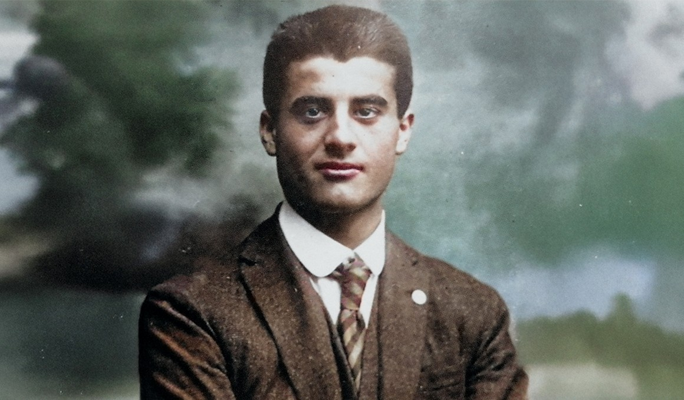

Jóvenes
entregados
a la misión
Descubrimos nuestra Vocación, sirviendo a la Verdad y construyendo comunidad con el espiritu del Evangelio.
Esencia que nos define y nos une
Nuestro camino se define por estos pilares que guían cada paso que damos:
Formación
Buscamos la Verdad con rigor intelectual. Formamos criterios sólidos para enfrentar los desafíos de un mundo que necesita luz y coherencia.
Comunidad
Más que un grupo, una hermandad. El servicio y la caridad son el cemento que une a los milicianos en una entrega total por el bien del otro.
Espiritualidad
Nuestra fuerza viene de lo alto. Vivimos una fe encarnada, valiente y profunda, donde la oración es el motor de toda nuestra acción miliciana.
Nuestros Patronos
Modelos de vida que inspiran nuestra misión diaria.

Pier Giorgio Frassati
Hacia lo alto
Apóstol de la juventud y el servicio a los pobres. Su fuerza en las montañas y su humildad en la ciudad son nuestro norte.
Sta. Catalina de Siena
Coraje y Sabiduría
Doctora de la Iglesia y pilar de la verdad. Su valentía para hablar a los poderosos inspira nuestra integridad institucional.
Campamento
Nacional 2027
Una experiencia vocacional inolvidable, junto a jovenes universitarios de todo el país